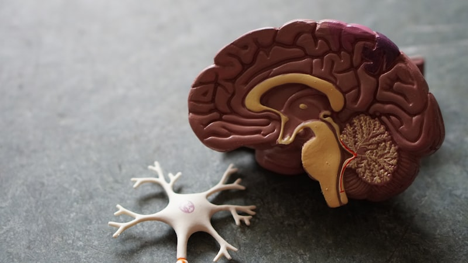

We tend to think of the gut as a private, internal world — a place shaped by what we eat and little else. But a growing body of research suggests something more surprising: the quality of our relationships may reach all the way down into the trillions of microbes living in our intestines. Call it the social-gut connection.
Loneliness is not simply an emotion. It is a physiological state, and the body responds to it the way it responds to other chronic stressors — with changes in hormones, inflammation, and yes, the composition of the microbiome itself. This article explores what scientists are learning about how social bonds shape gut health, and what you can do about it.
Why Would Loneliness Affect the Gut at All?
The link is not mystical; it runs through well-known pathways. The gut and brain communicate constantly through the gut-brain axis, using the vagus nerve, hormones, and immune signals. When the brain perceives social threat or prolonged isolation, it activates the stress response — releasing cortisol and shifting the body into a low-grade inflammatory state.
That stress chemistry does not stay in the head. It travels down the vagus nerve and through the bloodstream to the gut, where it can alter gut motility, change mucus production, and influence which bacteria thrive. Chronic stress is one of the most consistent disruptors of the microbiome that researchers have identified.
"The gut is not isolated from our social world. Stress signals born of loneliness can ripple through the entire digestive tract."
What the Research Actually Shows
Some of the most striking evidence comes from studies of social mammals. In primate and rodent research, individuals kept in isolation tend to develop less diverse microbiomes and higher levels of potentially inflammatory bacteria. When researchers transfer the microbes of isolated animals into others, some of the behavioral and immune effects seem to travel with them.
Human research is younger but pointed. Studies of older adults have found that people reporting higher loneliness show differences in the abundance of certain bacterial groups, including fewer of the fiber-fermenting types that produce anti-inflammatory short-chain fatty acids. Other work suggests that people living together — families, partners, roommates — tend to share more of their microbial communities than strangers do.
It Runs in Both Directions
Here is where it gets genuinely interesting: the relationship is bidirectional. Just as loneliness can shape the microbiome, the microbiome may shape how socially we behave. Bacteria influence the production of neurotransmitters and metabolites that affect mood, anxiety, and sociability. Some researchers describe this as a feedback loop — connection supports a healthier gut, and a healthier gut may make connection feel easier.
This is still an emerging field, and it is important not to overstate it. Nobody is claiming that a probiotic will cure loneliness. But the direction of the evidence is clear enough to take seriously: social life is part of gut health.
The Stress Pathway: Cortisol and the Barrier
Cortisol, the body's primary stress hormone, has a direct effect on the intestinal barrier — the thin layer of cells that decides what passes from your gut into your bloodstream. Under prolonged stress, that barrier can become more permeable, a state often called "leaky gut." When it happens, bacterial fragments can slip into circulation and trigger immune reactions that keep inflammation simmering.
For a fuller picture of the mechanisms at work, see our article on stress and the gut-cortisol axis →. Loneliness is simply one more source of that chronic stress load — quiet, easy to overlook, and often deeply felt.
Connection as a Digestive Habit
If relationships genuinely support the microbiome, then social time deserves a place on the same list as fiber and fermented foods. A few grounded starting points:
- Share meals when you can — eating with others tends to slow the meal down, encourage variety, and lower stress at the table
- Prioritize a few real relationships — depth appears to matter more than the sheer number of contacts
- Protect your sleep — loneliness disrupts sleep, and poor sleep reshapes the microbiome in turn
- Move together — a walk with a friend delivers movement, conversation, and stress relief in one habit
- Feed the fiber fermenters — the bacteria most sensitive to stress are the same ones that thrive on plant fiber
What About Pets and Community?
Connection does not have to be human. Living with a dog or cat has been linked in some studies to greater microbial diversity — likely because of shared environments, outdoor exposure, and the simple routine of care. Likewise, belonging to a community — a faith group, a class, a team — appears to buffer stress in ways that measurably support the body, including the gut.
In traditional cultures, meals were rarely eaten alone and daily life was woven through with social ritual. Whatever else we have gained in modern life, it is worth asking what we lost when eating became something we do in front of a screen.
The Honest Caveats
It would be easy to overclaim here, so let us be clear. Much of the research linking loneliness to microbiome composition is observational — it shows correlation, not always causation. Social isolation also tends to bring other changes, like poorer diet, disrupted sleep, and less movement, and untangling those threads is genuinely difficult.
What remains is a reasonable, low-risk conclusion: nurturing connection is good for you, and it is plausibly good for your gut. Unlike many interventions in this space, it is free, it has no side effects, and the worst case is that you enjoy your life a little more.
The Whole-Body View
GutWise has always argued that the body is not a collection of separate systems. Mood, sleep, digestion, and community are one fabric. Loneliness is not a failure of willpower — it is a signal, the same way hunger is a signal. Listening to it, and responding with care, is part of the same truth-seeking approach we bring to food and lifestyle.
💡 A grounded view. You cannot fix a microbiome with a supplement alone, and you cannot fix loneliness with a diet. The most durable gains come from stacking small, honest habits — real food, real sleep, real movement, and real people.
Your gut is shaped by everything you live through. That includes what you eat, how you sleep — and who you love. Treat your relationships as a health input, not a distraction from one.
🌿 Support your gut from the inside out. A warm daily ritual can be a small anchor for a calmer, more consistent routine. Many people find that starting the day with a gentle herbal tea — such as Cardio Slim Tea or All Day Slimming Tea — helps them slow down, hydrate, and stay steady. Explore natural gut health solutions →